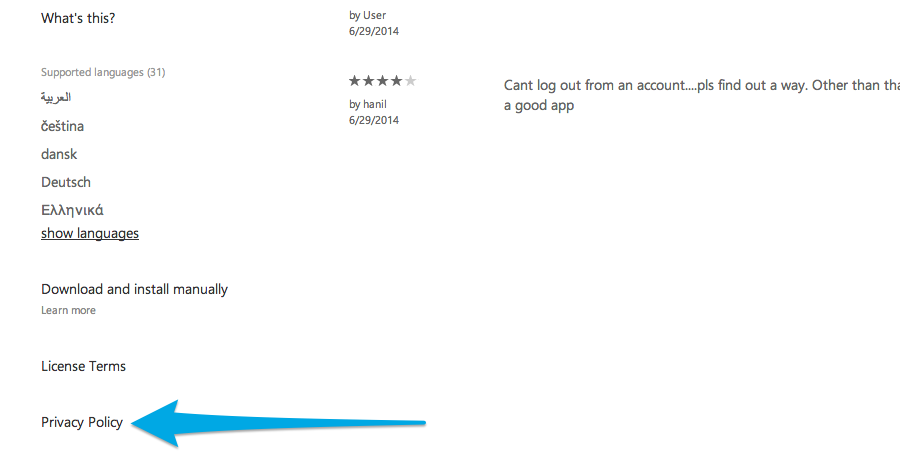

Letztes Update: 28.07.2014
Diese Seite beantwortet die Frage wie und warum man eine Datenschutzerklärung zu einer Windows Phone App hinzufügen sollte und wie diese zum Windows Phone Store hinzugefügt werden kann.

Eine Übersicht zu den juristischen Details finden sich auf der Hauptseite.
1) Verpflichtet mich der Windows Phone Store zu einer Datenschutzerklärung?
Im Moment ist dies nicht der Fall. Es gibt keine Blankoverpflichtung für eine Datenschutzerklärung um eine App auf den Windows Phone Store zu stellen. Es ist jedoch eher unwahrscheinlich, dass nicht eine der folgenden Dinge zutreffen (aus dem Englischen):
Aus den App certification requirements for the Windows Store
If your app has the technical ability to transmit data, you must maintain a privacy policy. You must provide access to your privacy policy in the Description page of your app, as well as in the app’s settings as displayed in the Windows Settings charm.
Aus dem App Developer Agreement
If your app enables access to and the use of any Internet-based services, or otherwise collects or transmits any user’s personal information, you must maintain a privacy policy. You are responsible for informing customers of your privacy policy (including by submitting that policy to us for display to customers). Your privacy policy must (i) comply with applicable laws and regulations, (ii) inform users of the information collected by your app and how that information is used, stored, secured and disclosed, and (iii) describe the controls that users have over the use and sharing of their information, and how they may access their information. You must also provide access to your privacy policy in the app’s settings as displayed in the Windows settings charm.
Aus demselben App Developer Agreement
The app and your marketing of the app must comply with the laws of each territory or country into which you request distribution of the app. This includes: (i) data protection, privacy and other laws and regulations relating to collection and use of user information by your app (ii) telecommunications laws and (iii) content ratings regulations. If you are required to make any disclosures to consumers prior to sale or download of the app, you must provide those in the app description field. Those may include your full contact information, notice that an app supports in-app purchases, or other disclosures. You must make such notices sufficiently prominent as is required by local law. Your app must not require further export, import or technology control licensing from any government. You must disclose to Microsoft any controlled technology employed, used or supported by your app. You may not use the Windows Store or any services or tools made available for the development of apps for any illegal activity.
Aus App policies for Windows Phone
The privacy policy of your app must inform users about how location data from the Location Service API is used and disclosed and the controls that users have over the use and sharing of location data. This can be hosted within or directly linked from the app. The privacy policy must be accessible from your app at any time - (2.7.2).
Aus denselben policies I (2.7.4)
If your app publishes or makes available location data obtained from the Location Service API to any other service or other person (including advertising networks), your app must implement a method to obtain opt-in consent. To "implement a method to obtain 'opt-in' consent," the app must:
- provide your privacy policy, which must be persistently accessible from within the app (and may also be made available in app details by populating the Privacy URL field in Dev Center) and must describe how the location information will be accessed, used or shared;
Same App policies II (2.8)
If your app (a) accesses or uploads a user's Contacts, Photos, Phone number, SMS history, Browsing history or any other data reasonably considered personal in nature, or if your app shares any of the foregoing information with third-party services or individuals, or (b) shares any unique device or user IDs, combined with user information, with third-party services or individuals, the app must implement a method to obtain the user’s "opt-in" consent. To "implement a method to obtain 'opt-in' consent," the app must:
- provide your privacy policy, which must be persistently accessible from within the app (and may also be made available in app details by populating the Privacy URL field in Dev Center) and must describe how the information will be accessed, used or shared;
3) Wie kann ich meine DSE zum Windows Phone Store hinzufügen/ändern?
Dieser Abschnitt erklärt wie eine Datenschutzerklärung dem Windows Phone Store hinzugefügt wird, damit der Nutzer die Datennutzung vor dem Download verstehen kann:
- Einloggen ins Windows Phone Dev Center account;
- Hier gibt’s ein "Privacy URL field";
- Fertig.
Der Link ist in der linken Seitenleiste vorzufinden, unter den anderen Informationen zur App:
Nun sind wir schon bereit. Bei Bedarf kann der längere, originale Artikel auf dem iubenda Blog gelesen werden (EN).
Das Ziel dieser Anleitung ist Entwickler in mehreren Sprachen über Ressourcen und Best-Practices zu informieren.
Push requests sind wilkommen.
Mehr darüber lesen wo sonst eine Datenschutzerklärung hingehört.